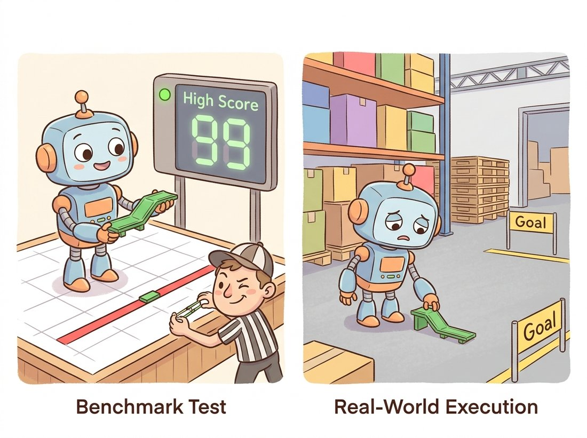

"They gave me ground truth from a laser scanner and a withheld test server. I cannot overfit to a number I am not allowed to see. It is the kindest thing a benchmark ever did for me."
An Algorithm With Nowhere to Cheat
A geometric vision result means nothing until it is reported on a standard benchmark with the field's agreed metric, because the dataset fixes the difficulty and the metric fixes the definition of success. Part II spans matching, stereo, flow, reconstruction, simultaneous localization and mapping (SLAM), and tracking, and each subfield has a canonical dataset (HPatches, KITTI, ETH3D, Sintel, TUM RGB-D, MOTChallenge) and a canonical number (end-point error, D1, ATE, HOTA). This section is the catalog, plus the hygiene rules that keep your numbers honest and comparable.
The pipelines of Section 17.2 hand back numbers, a registered-image count, a reprojection error, a recovered trajectory, and a number means nothing until you can say what it would score against an agreed reference. That is the third rung of the chapter's verbs-pipelines-scoreboards ladder, and it is where this section lives. Every chapter in Part II quietly relied on a benchmark to justify its claims: the matchers of Chapter 10, the stereo of Chapter 13, the SLAM of Chapter 14, the flow and tracking of Chapter 15. This section gathers those proving grounds into one reference, organized by task, so that before you trust any result, yours or a paper's, you know which dataset it was measured on, what metric was reported, and what that metric actually rewards. We move task by task, from features to tracking.
1. Calibration Targets & Feature Matching Beginner
The simplest "dataset" in Part II is a printed pattern. Camera calibration (Chapter 12) needs a target of known geometry, and the choice of target affects accuracy. The classic checkerboard is detected by cv2.findChessboardCorners; ChArUco boards (a checkerboard fused with ArUco markers) tolerate occlusion and partial views, which is why they have become the modern default for serious calibration. For feature matching, the standard benchmark is HPatches (Balntas et al., CVPR 2017): 116 scenes, each a reference image plus five images related by a known homography, split into illumination and viewpoint changes, with descriptor matching scored by mean average precision (mAP), a single number summarizing how well the correct matches are ranked above the wrong ones across all the test pairs. It is the dataset that lets you say "descriptor A beats descriptor B" with a number rather than an opinion.
A calibration target works because its geometry is known to sub-millimeter precision: the squares are a fixed size, perfectly planar, perfectly square. Every accuracy claim downstream inherits that assumption, so a warped printout, a checkerboard taped to a curved surface, or a board printed at the wrong scale corrupts the intrinsics silently and the error propagates into every reconstruction. The discipline mirrors the lesson of Chapter 8's metrics discussion: the ground truth is only as trustworthy as the physical setup that produced it. Mount the board on glass or aluminum, measure the printed square size, and treat the target as a precision instrument.
The optical-flow community trained on a Creative Commons movie. MPI Sintel is built from the Blender Foundation's open short film Sintel, so a decade of flow papers reported their headline numbers on dragons, falling snow, and a girl chasing a creature through a fantasy world, because the renderer that made the film could also export pixel-perfect motion vectors for free. The lesson under the trivia is real: dense, exact ground truth for flow is essentially impossible to capture from a real camera, so the field reached for the one place ground truth is free, the inside of a renderer. The convenient corollary is that any new game engine is a candidate flow benchmark, which is exactly how the 4K Spring dataset was later born.
2. Stereo & Multi-View Depth Intermediate
Dense depth (Chapter 13) has three canonical benchmarks, each contributing a different kind of difficulty. Middlebury Stereo is the historical reference: controlled indoor scenes, structured-light ground truth, and sub-pixel disparity evaluation that exposes fine errors. KITTI Stereo (Geiger et al., CVPR 2012) adds outdoor driving difficulty, real sensor noise, and LiDAR-derived sparse ground truth, with a withheld online test server. ETH3D (Schöps et al., CVPR 2017) supplies high-resolution multi-view stereo with laser-scan ground truth, the modern standard for reconstruction-quality evaluation, and the benchmark the COLMAP-class tools of Section 17.2 are judged on.
The standard stereo metric on KITTI is D1: the percentage of pixels whose disparity error exceeds both 3 pixels and 5 percent of the true disparity. Code 17.3.1 implements it directly so the definition is unambiguous, masking the invalid pixels where sparse LiDAR ground truth is missing.
# KITTI D1 stereo metric: count the fraction of valid pixels whose
# disparity error exceeds both an absolute (3 px) and a relative (5%)
# threshold, skipping pixels with no LiDAR ground truth.
import numpy as np
def d1_error(pred_disp, gt_disp, tau_px=3.0, tau_rel=0.05):
"""KITTI D1: fraction of valid pixels with disparity error too large.
A pixel is an outlier if abs error > 3 px AND > 5% of true disparity."""
valid = gt_disp > 0 # LiDAR ground truth is sparse
err = np.abs(pred_disp - gt_disp)
outlier = (err > tau_px) & (err > tau_rel * gt_disp)
return 100.0 * np.count_nonzero(outlier & valid) / np.count_nonzero(valid)
# Lower is better; strong stereo methods report D1 around 1-2% on KITTI.
print(f"D1 = {d1_error(pred, gt):.2f}%")valid mask is essential because grading the missing-ground-truth pixels would corrupt the score.D1 = 1.83%
A stereo or flow network outputs a value at every pixel, so it feels right to average the error over the whole image. On the real-world benchmarks here that is wrong, and silently so. KITTI's ground truth comes from LiDAR projected into the image, which is sparse: most pixels have no truth at all, and the convention is to store those as zero (the gt_disp > 0 test in Code 17.3.1). Averaging error over the full image therefore compares your prediction against zeros that mean "unknown", not "zero disparity", which can either flatter a method (if it also predicts small values there) or punish it for being right where no one is checking. Either way the number is not the dataset's number. This is the dense-prediction counterpart of the scale trap below: dense synthetic benchmarks such as Sintel and Spring do supply truth at every pixel, so the masking step looks unnecessary there and the habit quietly lapses, then breaks the moment you switch to a real LiDAR-labeled set. Always mask to the valid pixels, and report which pixels you scored, exactly as the official devkit does.
Code 17.3.1 is worth understanding once, but you should never ship your own benchmark scorer. Every dataset here ships an official development kit (devkit): KITTI, Middlebury, and ETH3D each provide reference evaluation code, and the leaderboards only accept submissions scored by those scripts. A hand-rolled D1 that handles the invalid mask, the occlusion regions, or the sub-pixel interpolation even slightly differently from the official devkit produces a number that is not comparable to the leaderboard, which silently invalidates every comparison you draw. The rule generalizes the metrics-reproducibility warning of Chapter 8: compute the score with the dataset's own tool, and report which tool and version you used.
3. Optical Flow Intermediate
Optical flow (Chapter 15) is graded by end-point error (EPE): the average Euclidean distance between the predicted flow vector and the ground-truth flow vector, per pixel. For a predicted flow $(u, v)$ and ground truth $(u^\*, v^\*)$,
$$ \text{EPE} = \frac{1}{N} \sum_{\text{pixels}} \sqrt{(u - u^\*)^2 + (v - v^\*)^2}. $$
The two anchor datasets are complementary, and a serious flow paper reports both. MPI Sintel (Butler et al., ECCV 2012) is rendered from an open-source animated film: it provides dense, pixel-perfect ground truth and deliberately hard conditions, large motions, motion blur, atmospheric haze, and a "final" pass with realistic rendering artifacts. KITTI Flow supplies real driving scenes with sparse LiDAR-derived ground truth, the reality check that synthetic Sintel cannot give. The 2023 Spring benchmark (Mehl et al., CVPR 2023) extends the synthetic line to high resolution with extremely dense ground truth, addressing the saturation of Sintel by the best learned methods. Table 17.3.1 places the flow and depth datasets side by side.
| Benchmark | Task | Ground truth | Metric |
|---|---|---|---|
| HPatches | Descriptor matching | Known homographies | Mean average precision |
| Middlebury | Stereo | Structured light | Bad-pixel %, sub-pixel |
| KITTI Stereo | Stereo (driving) | LiDAR (sparse) | D1 outlier % |
| ETH3D | Multi-view stereo | Laser scan | Accuracy / completeness |
| MPI Sintel | Optical flow | Rendered (dense) | End-point error |
| KITTI Flow | Optical flow (driving) | LiDAR (sparse) | Fl outlier % / EPE |
| Spring | Optical flow (HD) | Rendered (dense) | 1px outlier % / EPE |
4. SLAM, Odometry & Tracking Advanced
Trajectory estimation (Chapter 14) is evaluated against a recorded ground-truth path. The two standard metrics are Absolute Trajectory Error (ATE), which measures global consistency after rigidly aligning the estimated and true trajectories, and Relative Pose Error (RPE), which measures local drift over fixed time intervals. The canonical datasets are TUM RGB-D (Sturm et al., IROS 2012), which standardized the ATE/RPE file formats, the older KITTI Odometry split for driving, and the large synthetic TartanAir (Wang et al., IROS 2020) for hard photometric and motion conditions. The alignment step is the subtle part, and getting it wrong is the most common evaluation error in SLAM. The illustration below dramatizes the worst version of that error, the scale-correction trap detailed in this section's Practical Example.

Correctly evaluating a trajectory means parsing two timestamped pose files, associating their timestamps, solving the Umeyama alignment, then computing ATE and RPE: roughly 150 lines of code where a wrong scale convention silently halves your reported error. The alignment is the closed-form fit of the rotation, translation, and optional scale that best overlays the estimated path onto the ground-truth path. It is rigid for stereo and RGB-D, but similarity with a free scale factor for monocular, because monocular SLAM has no absolute scale. The evo package (Grupp) does all of it from the command line: evo_ape tum gt.txt est.txt -a -s computes the ATE with alignment (-a) and scale correction (-s) and plots it. The -s flag is not optional cosmetics for monocular methods; omitting it compares an unscaled estimate against a metric ground truth and reports nonsense. Use the tool, and state the alignment flags in your results.
Multi-object tracking (Chapter 15) has its own benchmark and a metric debate worth knowing. The MOTChallenge suite (Dendorfer et al., IJCV 2021) is the standard for pedestrian tracking. Its historical headline metric, Multiple Object Tracking Accuracy (MOTA), combines false positives, missed detections, and identity switches, but it is dominated by detection quality and barely penalizes identity errors. The newer Higher Order Tracking Accuracy (HOTA) metric (Luiten et al., IJCV 2021) explicitly balances detection accuracy against association accuracy by combining them as a geometric mean, and has become the preferred number precisely because it rewards the thing tracking is actually about: keeping the right identity on the right object over time. The geometric mean is the active ingredient: because $\sqrt{a \cdot b}$ collapses toward zero whenever either factor is small, a tracker cannot buy a high HOTA by acing detection while botching association (or the reverse), the way an arithmetic mean would let it average a strong half against a weak one. Only a method strong on both terms scores well, which is exactly the balance MOTA's additive bookkeeping fails to enforce. Figure 17.3.1 shows why the two metrics can rank the same trackers differently.
Who: A startup building a warehouse-robot localization module, benchmarking against KITTI Odometry.
Situation: Their monocular SLAM system reported a best-in-class ATE on the KITTI odometry sequences, and they shipped it to a pilot customer.
Problem: On the warehouse floor the system's trajectory drifted badly, despite the excellent benchmark number. The discrepancy was an evaluation artifact: their KITTI ATE had been computed with similarity alignment and scale correction (evo -a -s), which is correct for monocular methods on a benchmark but masks the fact that monocular SLAM cannot recover absolute scale at all. The benchmark had quietly rescaled their trajectory to match ground truth every time; the warehouse had no such oracle.
Dilemma: Two paths competed. They could stay monocular and bolt on a scale estimator, an IMU or a known object size, cheap on hardware but adding a fragile calibration step and a new failure mode of its own. Or they could add a second camera to recover metric scale directly from stereo, costing about 200 dollars in hardware and a synchronization rebuild, but removing the scale ambiguity at the source. The first protected the slick benchmark number; the second protected the customer.
Decision: They re-scored without scale correction to see the true scaled error, recognized the scale ambiguity from Chapter 13 as the root cause, and added a stereo camera to recover metric scale directly.
Result: The stereo system held scale in the field. The benchmark number dropped slightly (stereo ATE without the rescaling crutch is a harder, more honest number) but the deployed behavior finally matched the lab.
Lesson: A metric can flatter a method by compensating for exactly the weakness that will sink it in production. Read what the alignment flags do; a monocular ATE with scale correction answers a different question than the field asks.
The defining 2023 to 2026 dynamic in this space is benchmark saturation: learned methods have so thoroughly solved the classic datasets that the error bars collapse and rankings become noise. The community's response has been new, harder benchmarks. Spring (Mehl et al., CVPR 2023) rebuilt optical-flow evaluation at 4K resolution with billion-pixel ground truth because Sintel's leaderboard had compressed to near-ties. The Image Matching Challenge (organized through 2024 to 2025) reframed feature matching around downstream pose accuracy on phototourism data rather than HPatches mAP, because descriptors that win on HPatches do not always win at reconstruction. And TartanAir and its successors push SLAM into photometrically brutal synthetic conditions that the TUM RGB-D sequences never contained. The meta-lesson for 2026: a benchmark is a moving target, a 2018 state-of-the-art number is not a 2026 state-of-the-art number, and the only safe comparison is one run on the same dataset version with the same official devkit. The learned methods that drive this saturation are the subject of Chapter 26 and Chapter 25.
The alignment-and-scale subtlety above is not a detail to read past; it is the single most common way an honest-looking trajectory number lies. The best way to internalize it is to build the scoreboard yourself once, then watch a tool reproduce it. Put the section's evaluation lessons into practice in the Hands-On Lab at the end of this section, which has you implement Absolute Trajectory Error from scratch, expose the scale-correction trap on a controlled example, and finish by reproducing your own numbers with evo.
For each claim a paper might make, name the dataset and metric from Table 17.3.1 (or Section 4) you would expect it to report on, and one weakness of that benchmark the authors should disclose: (a) "our descriptor is more robust to illumination change"; (b) "our stereo method is accurate on driving scenes"; (c) "our optical flow handles large motions and motion blur"; (d) "our multi-object tracker preserves identities through occlusion."
Implement end-point error from its formula above for a predicted and ground-truth flow field (two H×W×2 arrays), then sanity-check it three ways: (a) EPE of a field against itself is 0; (b) EPE of a zero-flow prediction equals the mean ground-truth motion magnitude; (c) adding a constant 1-pixel shift in $u$ to a correct prediction yields EPE near 1. Then add a validity mask (as KITTI flow requires) and confirm that masking changes the result when ground truth is sparse. Why does the masked and unmasked EPE differ most on KITTI but not on Sintel?
Take any monocular trajectory estimate and its ground truth (TUM RGB-D provides both). Compute the ATE twice with evo: once with scale correction (-a -s) and once without (-a only). Report both numbers and the recovered scale factor. Explain, using the monocular scale ambiguity of Chapter 13, why the two ATEs differ and which one a robotics customer deploying the system without a scale oracle actually cares about.
Build, from numpy alone, a trajectory-evaluation tool that aligns an estimated camera path to ground truth and reports the Absolute Trajectory Error (ATE), then use it to reproduce the production failure of this section's Practical Example: a monocular trajectory that looks excellent only because scale correction quietly rescaled it. You will finish with a small, reusable scoreboard, the top layer of the chapter's verbs-pipelines-scoreboards stack, and confirm your numbers against the standard tool evo.
What You'll Practice
- Implementing the Umeyama closed-form similarity alignment (rotation, translation, and optional scale) that underlies every honest ATE computation in Section 4.
- Computing ATE root-mean-square error and reading it as the global-consistency metric defined in Section 4 alongside RPE.
- Distinguishing rigid alignment (for stereo and RGB-D) from similarity alignment with a free scale (for monocular), the distinction behind the monocular scale ambiguity of Chapter 13.
- Demonstrating the scale-correction trap of this section's Practical Example: why
evo -a -scan flatter exactly the weakness that sinks a method in the field. - Cross-checking a hand-rolled metric against the production tool evo from the chapter bibliography.
Setup
pip install numpy evoNo dataset download and no GPU are required: the lab generates its own ground-truth and estimated trajectories so the answer is known in advance and every step is reproducible. The evo install is used only in the final cross-check step; the harness itself depends on numpy alone.
Work through the steps in order. Each prints a checkpoint so you can confirm progress before moving on, and a complete reference solution is folded at the end.
Step 1: Generate a ground-truth path and a flawed monocular estimate
Create a known ground-truth trajectory and a deliberately corrupted estimate of it. The corruption is the realistic monocular failure of this section's Practical Example: the estimated path is rotated, shifted, and uniformly shrunk by an unknown scale, then lightly noised. Because you build both paths, you know the true error and can check your harness against it.
import numpy as np
rng = np.random.default_rng(0)
t = np.linspace(0, 4 * np.pi, 200)
# Ground-truth path: a rising spiral, positions only (N x 3), in meters.
gt = np.stack([np.cos(t), np.sin(t), 0.15 * t], axis=1)
# TODO: build `est` from `gt` as a monocular estimate would relate to truth:
# 1. shrink by a true scale factor s_true = 0.5 (monocular has no metric scale),
# 2. rotate by a fixed rotation R_true about the z axis (e.g. 30 degrees),
# 3. translate by a fixed offset t_true (e.g. [2, -1, 0.5]),
# 4. add small Gaussian noise (std 0.01) so the fit is not exact.
# Hint: est_i = s_true * (R_true @ gt_i) + t_true + noise_i
s_true = 0.5
# ... define R_true, t_true, then est = ...
print("gt shape", gt.shape, "est shape", est.shape)Hint
A rotation about z by angle $\theta$ is R = np.array([[cos, -sin, 0], [sin, cos, 0], [0, 0, 1]]). Apply it to all points at once with (R @ gt.T).T, then scale, add the translation by broadcasting, and add rng.normal(0, 0.01, gt.shape).
Step 2: Implement Umeyama alignment
Write the closed-form fit that best overlays one path onto another. Section 4 names this as the subtle step every ATE depends on. The same routine serves both alignment modes: pass with_scale=False for the rigid alignment used with stereo and RGB-D, and with_scale=True for the similarity alignment used with monocular methods.
def umeyama(src, dst, with_scale):
"""Least-squares similarity (s, R, t) mapping src onto dst.
src, dst: (N, 3) arrays. Returns s (float), R (3x3), t (3,)."""
mu_src, mu_dst = src.mean(0), dst.mean(0)
sc, dc = src - mu_src, dst - mu_dst
cov = (dc.T @ sc) / len(src)
U, D, Vt = np.linalg.svd(cov)
S = np.eye(3)
if np.linalg.det(U) * np.linalg.det(Vt) < 0: # reflection guard
S[2, 2] = -1
R = U @ S @ Vt
# TODO: compute the scale `s`.
# with_scale=True -> s = trace(diag(D) @ S) / variance of src
# with_scale=False -> s = 1.0 (rigid alignment, no rescaling)
# Then compute t = mu_dst - s * R @ mu_src and return s, R, t.
...
return s, R, tHint
The source variance is var = (sc ** 2).sum() / len(src). With scale, s = np.trace(np.diag(D) @ S) / var. The translation is t = mu_dst - s * R @ mu_src in both modes.
Step 3: Compute ATE after alignment
Align the estimate to the ground truth, then measure the leftover positional error. ATE is the root-mean-square of the per-pose Euclidean distances after the best alignment, the global-consistency number from Section 4.
def ate_rmse(gt, est, with_scale):
# TODO: align est onto gt with umeyama(est, gt, with_scale),
# map every est point: est_aligned = s * (R @ est_i) + t,
# then return sqrt(mean(||gt_i - est_aligned_i||^2)) and the scale s.
...
return rmse, s
rmse_rigid, s_rigid = ate_rmse(gt, est, with_scale=False)
rmse_sim, s_sim = ate_rmse(gt, est, with_scale=True)
print(f"ATE rigid (no scale): {rmse_rigid:.4f} m, recovered scale {s_rigid:.3f}")
print(f"ATE similarity (-s): {rmse_sim:.4f} m, recovered scale {s_sim:.3f}")Hint
Apply the fit with est_aligned = (s * (R @ est.T)).T + t. The error is np.sqrt(((gt - est_aligned) ** 2).sum(1).mean()).
Step 4: Read the trap in the two numbers
Compare the two ATEs and the recovered scale. The similarity fit should recover a scale near the true 0.5 and report a tiny error, while the rigid fit, forbidden from rescaling, reports a large error. Print the contrast in plain language so the lesson is unmissable.
# TODO: print a one-line verdict. The similarity ATE looks excellent only
# because it silently rescaled the estimate by ~2x to match metric truth.
# The rigid ATE is the number a robot WITHOUT a scale oracle actually lives with.
print(f"similarity hides a {1.0 / s_sim:.2f}x scale error that rigid alignment exposes")
# Expected: rigid ATE >> similarity ATE; recovered scale ~ 0.5.Hint
Connect it back to the Practical Example: evo -a -s on a benchmark is the similarity fit, and it answers a different question than a deployed monocular system, which has no oracle to rescale against, faces in the field.
Step 5: Cross-check against evo
Write both trajectories to TUM-format files and confirm your hand-rolled ATE matches the standard tool. This is the chapter's recurring move: build the scoreboard once to understand it, then hand the job to the library that does it correctly at scale.
# TUM format per line: timestamp tx ty tz qx qy qz qw (identity quaternion here).
def write_tum(path, xyz):
with open(path, "w") as f:
for i, p in enumerate(xyz):
f.write(f"{i:.6f} {p[0]} {p[1]} {p[2]} 0 0 0 1\n")
write_tum("gt.txt", gt)
write_tum("est.txt", est)
# TODO: from the shell, run both and compare to your Step 3 numbers:
# evo_ape tum gt.txt est.txt -a # rigid: should match rmse_rigid
# evo_ape tum gt.txt est.txt -a -s # similarity: should match rmse_sim
print("wrote gt.txt and est.txt; run evo_ape to confirm")Hint
evo prints an "rmse" row in its statistics table. With -s it also prints the estimated scale; it should agree with your s_sim near 0.5. Small differences come only from timestamp handling, not the math.
Expected Output
The similarity-aligned ATE prints as a small number (well under a centimeter, dominated by the injected noise) with a recovered scale near 0.500, while the rigid ATE prints far larger (on the order of the spiral's own size) because it cannot undo the 2x scale mismatch. The verdict line reports roughly a 2.00x scale error hidden by the similarity fit. In Step 5, evo_ape ... -a reproduces your rigid number and evo_ape ... -a -s reproduces both your similarity number and the recovered scale, confirming the harness is correct. The takeaway matches the Practical Example: the flattering monocular number was an alignment artifact, not field performance.
Stretch Goals
- Add Relative Pose Error (RPE) to the harness: measure drift over fixed frame intervals rather than after global alignment, and observe that RPE is far less sensitive to the scale trap than ATE.
- Replace the synthetic estimate with a real one: run the Chapter 14 reconstruction lab on your own photos, export the camera centers as a trajectory, and score them against an approximate ground truth path.
- Sweep the noise level and plot ATE versus noise for both alignment modes, then mark where benchmark saturation (the Research Frontier above) would make rankings unreliable.
Complete Solution
import numpy as np
# ---- Step 1: ground truth and a flawed monocular estimate ----
rng = np.random.default_rng(0)
t = np.linspace(0, 4 * np.pi, 200)
gt = np.stack([np.cos(t), np.sin(t), 0.15 * t], axis=1)
s_true = 0.5
th = np.deg2rad(30)
R_true = np.array([[np.cos(th), -np.sin(th), 0],
[np.sin(th), np.cos(th), 0],
[0, 0, 1]])
t_true = np.array([2.0, -1.0, 0.5])
est = s_true * (R_true @ gt.T).T + t_true + rng.normal(0, 0.01, gt.shape)
# ---- Step 2: Umeyama similarity alignment ----
def umeyama(src, dst, with_scale):
mu_src, mu_dst = src.mean(0), dst.mean(0)
sc, dc = src - mu_src, dst - mu_dst
cov = (dc.T @ sc) / len(src)
U, D, Vt = np.linalg.svd(cov)
S = np.eye(3)
if np.linalg.det(U) * np.linalg.det(Vt) < 0:
S[2, 2] = -1
R = U @ S @ Vt
if with_scale:
var = (sc ** 2).sum() / len(src)
s = np.trace(np.diag(D) @ S) / var
else:
s = 1.0
t = mu_dst - s * R @ mu_src
return s, R, t
# ---- Step 3: ATE after alignment ----
def ate_rmse(gt, est, with_scale):
s, R, t = umeyama(est, gt, with_scale)
est_aligned = (s * (R @ est.T)).T + t
rmse = np.sqrt(((gt - est_aligned) ** 2).sum(1).mean())
return rmse, s
rmse_rigid, s_rigid = ate_rmse(gt, est, with_scale=False)
rmse_sim, s_sim = ate_rmse(gt, est, with_scale=True)
print(f"ATE rigid (no scale): {rmse_rigid:.4f} m, recovered scale {s_rigid:.3f}")
print(f"ATE similarity (-s): {rmse_sim:.4f} m, recovered scale {s_sim:.3f}")
# ---- Step 4: read the trap ----
print(f"similarity hides a {1.0 / s_sim:.2f}x scale error that rigid alignment exposes")
# ---- Step 5: cross-check against evo ----
def write_tum(path, xyz):
with open(path, "w") as f:
for i, p in enumerate(xyz):
f.write(f"{i:.6f} {p[0]} {p[1]} {p[2]} 0 0 0 1\n")
write_tum("gt.txt", gt)
write_tum("est.txt", est)
print("wrote gt.txt and est.txt")
# Shell cross-check:
# evo_ape tum gt.txt est.txt -a -> rmse matches rmse_rigid
# evo_ape tum gt.txt est.txt -a -s -> rmse matches rmse_sim, scale ~ 0.5